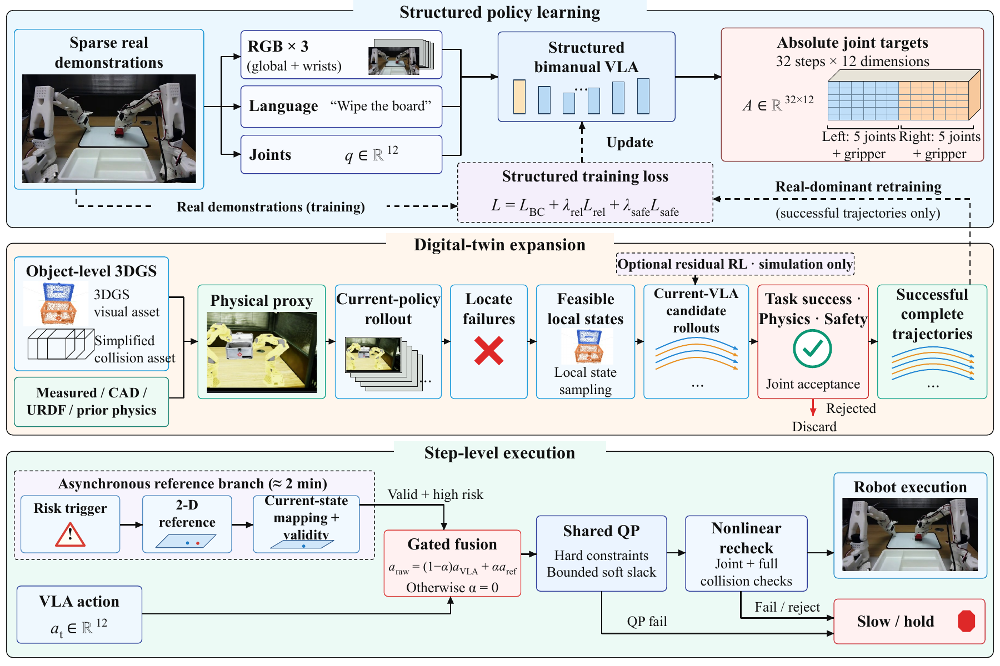
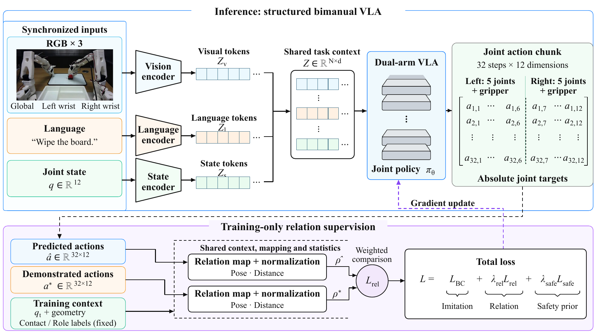
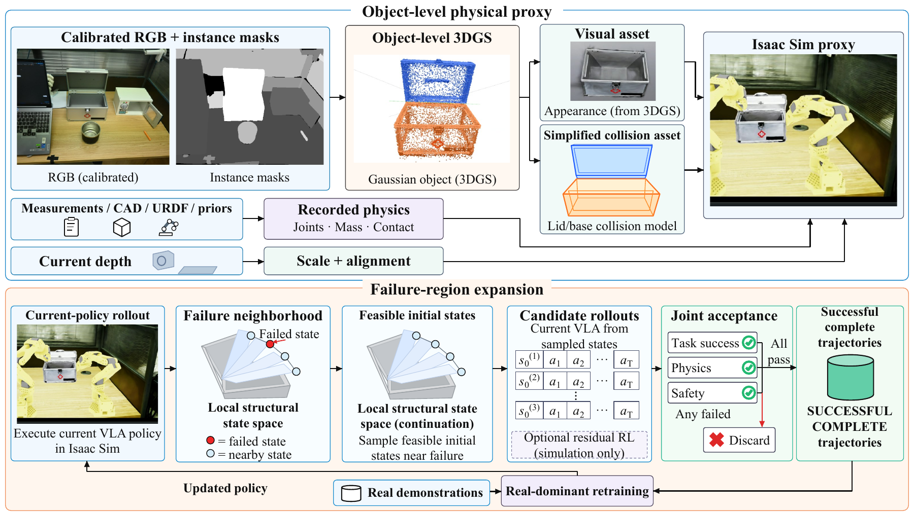
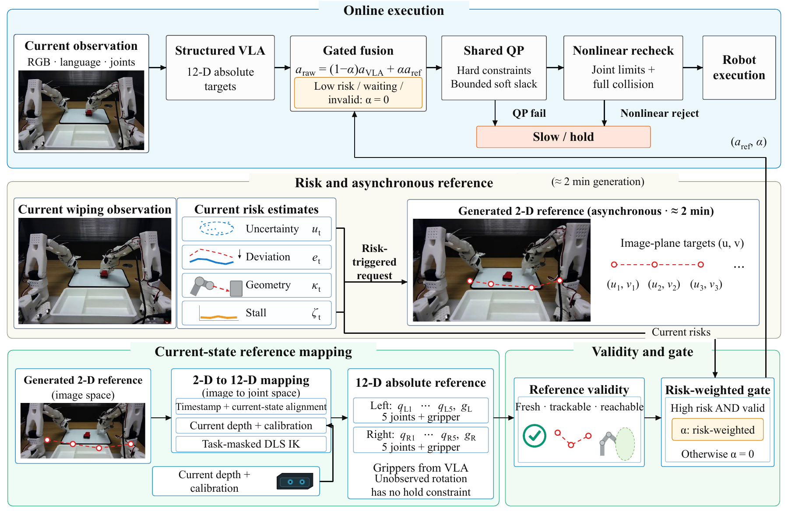
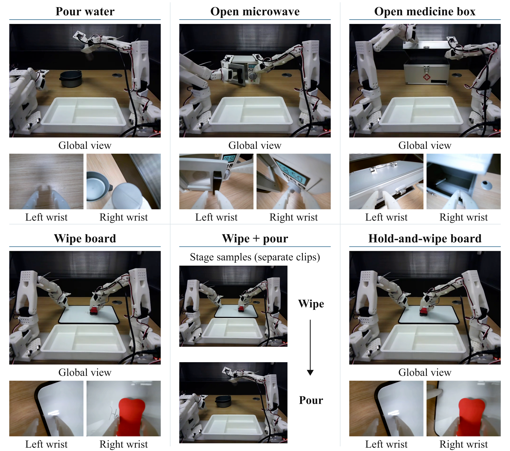

Abstract
Sparse bimanual demonstrations cover limited object states and contact configurations. More from Less combines structured action prediction, failure-region expansion, and local recovery. A vision–language–action (VLA) policy predicts joint action chunks with shared context and training-only geometric supervision. Object-level 3D Gaussian Splatting supplies appearance assets for physical proxies with separate collision geometry and assigned physics. Policy failures locate regions for virtual rollouts. Only complete trajectories passing task, physics, and safety checks enter real-dominated retraining. During deployment, asynchronous video references provide image-plane targets for current-state mapping and gated fusion. Base and fused actions pass through a shared quadratic program and nonlinear recheck. Across six real-robot task categories, Full Pipeline reaches a four-stage macro-average success rate of 89.00%, compared with 75.83% for Structured Dual-arm VLA. This comparison measures stage-level outcomes of the combined system, rather than complete-task success.
中文摘要
稀疏双臂示教对对象状态和接触构型的覆盖有限。More from Less 将结构化动作预测、失败区域拓展与局部恢复相结合。视觉—语言—动作（VLA）策略基于共享上下文预测联合动作块，几何关系监督仅用于训练。对象级 3D Gaussian Splatting 为物理代理提供外观资产，碰撞几何与物理参数分别建模。策略失败用于定位虚拟试运行区域，只有通过任务、物理和安全检查的完整轨迹才进入真实数据主导的再训练。部署时，异步视频参考提供图像平面目标，经当前状态映射与门控融合形成动作；基础动作和融合动作均通过共享二次规划与非线性复检。在六类实机任务中，完整系统的四阶段宏平均成功率为 89.00%，结构化双臂 VLA 为 75.83%。这一比较反映组合系统的阶段级结果，不等同于完整任务成功率。
Method Overview
Sparse real demonstrations anchor policy learning. Accepted virtual trajectories extend training coverage, while valid references support local recovery at deployment.

Structured Bimanual Policy
Three synchronized RGB views, language and joint state feed a shared policy. A 32 × 12 action chunk jointly represents both arms: five driven joints and one gripper per arm. Pose and distance relations provide differentiable training supervision. Contact and role labels provide fixed training context; they are not additional inference inputs or differentiable action targets.

Failure-Guided Digital-Twin Expansion
Object-level 3DGS appearance and simplified collision assets form a physical proxy with measured or prior physics. Current-policy failures guide feasible local initial states. Candidate rollouts must pass task, physics and safety acceptance; optional residual RL proposes candidates only in simulation.

Step-Level Trajectory Compensation
Video generation takes approximately two minutes and runs asynchronously. Its 2D image targets undergo timestamp and current-state alignment, depth/calibration mapping, task-masked DLS IK and validity checks. Gated actions always pass shared QP filtering and nonlinear rechecks; rejected commands slow or hold execution.

Experiments
Six Bimanual Task Categories
Pouring, microwave opening, medicine-box opening, board wiping, wiping–pouring, and holding–wiping coordination.

Quantitative Results
Reported values from the manuscript. Stage success and step recovery use different evaluation units.
| Method | Approach & grasp | Grasp & transport | Placement | Interaction | Stage macro avg. |
|---|---|---|---|---|---|
| Behavior Cloning (Transformer) | 51.33 ± 3.03 | 47.33 ± 4.02 | 48.44 ± 3.75 | 53.56 ± 4.27 | 50.17 ± 1.45 |
| ACT | 59.11 ± 3.44 | 52.89 ± 2.78 | 54.89 ± 2.48 | 59.33 ± 3.61 | 56.56 ± 1.78 |
| Diffusion Policy | 63.33 ± 3.33 | 57.78 ± 3.00 | 59.56 ± 3.75 | 63.78 ± 3.53 | 61.11 ± 1.88 |
| Track2Act-style Video Imitation | 65.11 ± 2.48 | 58.22 ± 2.13 | 60.22 ± 3.44 | 65.78 ± 2.95 | 62.33 ± 1.38 |
| Single-arm VLA | 65.11 ± 3.53 | 57.56 ± 2.66 | 60.00 ± 1.78 | 64.89 ± 2.48 | 61.89 ± 1.24 |
| Naive Dual-arm VLA | 70.00 ± 3.56 | 66.67 ± 3.09 | 67.56 ± 1.98 | 71.11 ± 2.72 | 68.83 ± 1.47 |
| Structured Dual-arm VLA | 78.45 ± 2.47 | 72.22 ± 2.72 | 73.33 ± 2.18 | 79.33 ± 2.58 | 75.83 ± 0.83 |
| Ours Full Pipeline† | 91.33 ± 2.11 | 86.00 ± 1.87 | 87.56 ± 1.52 | 91.11 ± 2.72 | 89.00 ± 0.72 |
Mean ± sample SD, %. The macro-average weights four stages equally; it is not end-to-end task success. † Full Pipeline additionally uses virtual expansion and deployment compensation.
| Method | Compensation | Step recovery | Task success | Collision | Compensation success |
|---|---|---|---|---|---|
| Base Policy | × | 1.33 ± 2.11 | 72.17 ± 2.65 | 8.50 ± 1.27 | N/A |
| Policy Retry | Repeat base policy | 30.00 ± 3.56 | 75.17 ± 2.40 | 9.83 ± 1.14 | 22.00 ± 3.52 |
| Hand-crafted Waypoint | Manual local waypoint | 42.44 ± 2.95 | 78.50 ± 2.80 | 7.50 ± 1.34 | 36.45 ± 3.21 |
| Diffusion/Video Trajectory Baseline | Generated video reference | 53.33 ± 2.18 | 80.50 ± 2.15 | 8.67 ± 1.29 | 45.78 ± 3.88 |
| Ours Trajectory Compensation | Alignment + gated fusion + shared filtering | 67.78 ± 3.00 | 85.33 ± 2.29 | 5.50 ± 1.04 | 64.22 ± 3.20 |
Mean ± sample SD, %. Recovery/compensation use matched trigger segments; task success/collision use complete evaluation episodes. N/A means compensation is not defined for the base policy.
Evaluation and reproducibility notes
These are descriptive comparisons. Per-round expansion counts, matched compute budgets, quantitative proxy errors and full online timing records are not included in this release. See the reproducibility notes.
Code & Resources
Visit the GitHub repository, source browser, README, and source manifest. The release includes offline trajectory examples, object reconstruction and physical-proxy utilities, and simulator interfaces.
The original VLA training, iterative expansion and online controller are not complete reproducible releases. Available components and dependencies are documented in the reproducibility notes.
Run the available examples
python -m pip install -r requirements.txt
python -m unittest discover -s tests -v
python paper_pipeline/run_morefromless_pipeline.py
python scripts/serve.pyBibTeX
@unpublished{anonymous2026morefromless,
title = {More from Less: 3D Gaussian Splatting Digital Twins with Iterative Expansion and Trajectory Compensation for Sparse-Demonstration Bimanual Manipulation},
author = {{Anonymous Authors}},
note = {Research manuscript},
year = {2026}
}